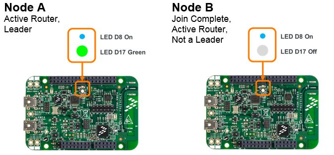

Note: the images used in the detailed steps assume using FRDM-KW24D512 platform for Node A and Node B. Tables at the end of the section
show images of initiating the multicast action also for the other supported boards.
To create a partitioning situation:
- All following steps assume the initial joining of Node B to the network
created by Node A has been performed as shown in section Steps to Create a
Network and Joining a New Device. Node A and Node B should be Active Routers
and in connectivity range.

- Create a loss of connectivity situation so that Node B is no longer in
radio range with Node A. To achieve that either:
- Temporarily power off Node A
- Take one of the nodes physically out of range from the
other – for instance by moving the nodes to different floors for a
multistoried building or increasing the physical distance between the nodes
significantly (100 feet or longer)
- Note that if Node B is not power-off reset, then in 1-2 minutes
after losing connectivity, it indicates via its LED it has become a new partition
Leader (on FRDM-KW24D512 the RGB LED D17 turns
green).
This indicates Node B is part of a distinct network partition.
- If a power-off reset takes place onNode B as the nodes
are out of range, the partitioning happens more quickly as Node B starts back up as
an Active Router without detecting other neighbor Routers.
- Bring the 2 nodes back into range (for example, power Node A back
on)
- Note the network reverts back to having one Leader, indicating the
distinct partitions have merged. Note that Node B can also emerge as the
single Leader when the partitions are merged back.